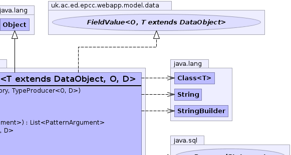
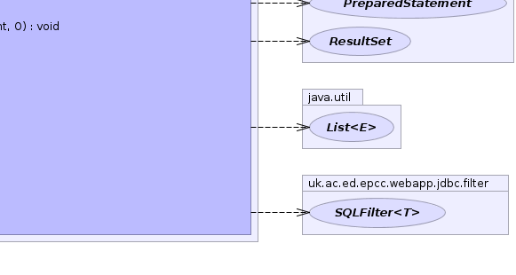

- java.lang.Object
-
- uk.ac.ed.epcc.webapp.model.data.TypeProducerFieldValue<T,O,D>
-
- Type Parameters:
T- type of owning objectO- type of produced objectD- type of underlying data
- All Implemented Interfaces:
- Accessor<O,T>, GroupingSQLValue<O>, SQLAccessor<O,T>, SQLValue<O>, FieldValue<O,T>, Targetted<O>
public class TypeProducerFieldValue<T extends DataObject,O,D> extends java.lang.Object implements FieldValue<O,T>
A SQLAccessor for a field with aTypeProducerThis accessor returns the produced object. Unlike mostFieldValues it is neither aFieldSQLExpressionnot aFilterProviderbut it can generate filters viaFieldValueFilter.- See Also:
FieldValueFilter-
 

-
-
Constructor Summary
Constructors Constructor and Description TypeProducerFieldValue(Repository repository, TypeProducer<O,D> producer)
-
Method Summary
All Methods Instance Methods Concrete Methods Modifier and Type Method and Description intadd(java.lang.StringBuilder sb, boolean qualify)Add the expression to a StringBuilderbooleancanSet()does thisAccessorsupport setting values.java.lang.StringgetFieldName()Get the corresponding field name.java.util.List<PatternArgument>getParameters(java.util.List<PatternArgument> list)Add parameters for this value to a list.TypeProducer<O,D>getProducer()SQLFiltergetRequiredFilter()Get an SQLFilter required to be added to the filter set.java.lang.Class<O>getTarget()Get the type of the returned object as far as it is known.OgetValue(T r)get the value from the target objectOmakeObject(java.sql.ResultSet rs, int pos)Extract a result of the expression from a ResultSet into an object of the specified type.voidsetObject(java.sql.PreparedStatement stmt, int pos, O value)Add an object of the target type to a prepared statement doing any necessary type conversion to map it to the SQL representation of the object (as generated byFieldValue.addField(StringBuilder, boolean)Note this is only valid if canSet fromSQLAccessorreturns true.voidsetValue(T r, O value)Set value if supported otherwise throw aUnsupportedOperationException.-
Methods inherited from class java.lang.Object
clone, equals, finalize, getClass, hashCode, notify, notifyAll, toString, wait, wait, wait
-
Methods inherited from interface uk.ac.ed.epcc.webapp.model.data.FieldValue
addField
-
Methods inherited from interface uk.ac.ed.epcc.webapp.jdbc.expr.GroupingSQLValue
addGroup, checkContentsCanGroup, getGroupParameters, groupingIsomorphic
-
-
-
-
Constructor Detail
-
TypeProducerFieldValue
public TypeProducerFieldValue(Repository repository, TypeProducer<O,D> producer)
-
-
Method Detail
-
getValue
public O getValue(T r)
Description copied from interface:Accessorget the value from the target object- Specified by:
getValuein interfaceAccessor<O,T extends DataObject>- Parameters:
r- target object- Returns:
- value
-
getProducer
public TypeProducer<O,D> getProducer()
-
add
public int add(java.lang.StringBuilder sb, boolean qualify)Description copied from interface:SQLValueAdd the expression to a StringBuilder
-
getParameters
public java.util.List<PatternArgument> getParameters(java.util.List<PatternArgument> list)
Description copied from interface:SQLValueAdd parameters for this value to a list.- Specified by:
getParametersin interfaceSQLValue<O>- Parameters:
list- to modify- Returns:
- modified list of parameter objects
-
makeObject
public O makeObject(java.sql.ResultSet rs, int pos) throws DataException, java.sql.SQLException
Description copied from interface:SQLValueExtract a result of the expression from a ResultSet into an object of the specified type. Note that this method is also used to extract the result of functions over the result type.- Specified by:
makeObjectin interfaceSQLValue<O>- Parameters:
rs- ResultSet- Returns:
- produced object
- Throws:
DataExceptionjava.sql.SQLException
-
setValue
public void setValue(T r, O value)
Description copied from interface:AccessorSet value if supported otherwise throw aUnsupportedOperationException.- Specified by:
setValuein interfaceAccessor<O,T extends DataObject>
-
setObject
public void setObject(java.sql.PreparedStatement stmt, int pos, O value) throws java.sql.SQLExceptionDescription copied from interface:FieldValueAdd an object of the target type to a prepared statement doing any necessary type conversion to map it to the SQL representation of the object (as generated byFieldValue.addField(StringBuilder, boolean)Note this is only valid if canSet fromSQLAccessorreturns true.- Specified by:
setObjectin interfaceFieldValue<O,T extends DataObject>- Throws:
java.sql.SQLException
-
getTarget
public java.lang.Class<O> getTarget()
Description copied from interface:TargettedGet the type of the returned object as far as it is known. Normally this should be the erasure type corresponding to T.
-
getFieldName
public java.lang.String getFieldName()
Description copied from interface:FieldValueGet the corresponding field name. This should not be used to create SQL fragments but can be used to identify Repository field names- Specified by:
getFieldNamein interfaceFieldValue<O,T extends DataObject>- Returns:
- database field name
-
canSet
public boolean canSet()
Description copied from interface:Accessordoes thisAccessorsupport setting values.- Specified by:
canSetin interfaceAccessor<O,T extends DataObject>- Returns:
-
getRequiredFilter
public SQLFilter getRequiredFilter()
Description copied from interface:SQLValueGet an SQLFilter required to be added to the filter set. This is usually to implement a join.- Specified by:
getRequiredFilterin interfaceSQLValue<O>- Returns:
- null or SQLFilter
-
-